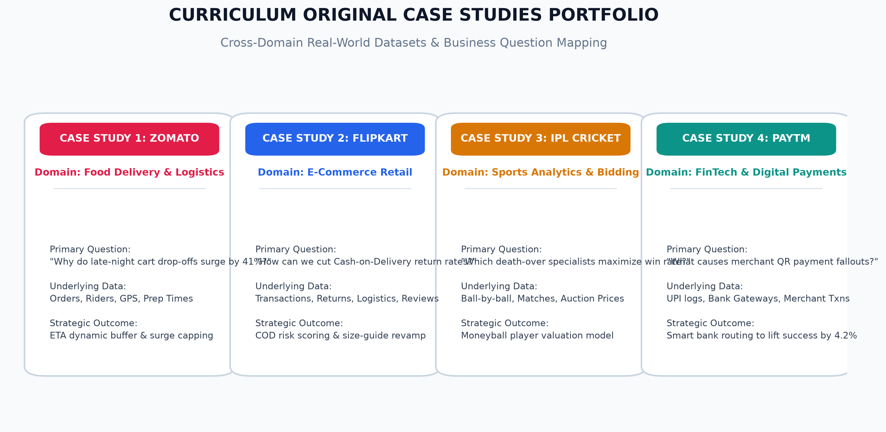
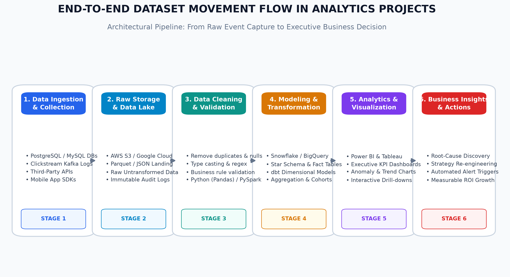

Curriculum Case Studies, Data Ingestion Flow, and Industry Analytics Practice


| Stage | Components & Tools | Analytical Purpose |
|---|---|---|
| 1. Ingestion & Collection | Apache Kafka, PostgreSQL, Mobile App SDKs | Captures user clicks, add-to-carts, payments, and sensor events in real-time. |
| 2. Raw Storage & Data Lake | AWS S3, Google Cloud Storage, Parquet | Preserves raw, unmuted event streams for compliance and historical replayability. |
| 3. Cleaning & Validation | Python (Pandas), PySpark, AWS Glue | Removes duplicates, enforces type safety, and trims corrupted strings. |
| 4. Modeling & Transformation | Snowflake, BigQuery, dbt, Star Schema | Builds structured fact and dimension tables optimized for analytical querying. |
| 5. Analytics & Visualization | Power BI, Tableau, DAX Measures | Transforms tabular data into executive KPI dashboards and interactive drill-downs. |
| 6. Business Action & ROI | Automated alerts, Dynamic Pricing, ML Scoring | Translates analytical findings into measurable revenue growth and cost savings. |
"What is the exact correlation between payment method (COD vs. UPI/Card) and doorstep return rates across product categories, and how much margin is lost due to unfulfilled COD deliveries in Tier-2/3 cities?"
"Does heavy discounting (> 40%) in Fashion attract 'serial returners' who order multiple sizes with the intent to return, and what is the net profit per customer after accounting for reverse logistics costs?"
"At what customer review rating threshold (e.g. < 3.2 stars) or delivery delay threshold (> 48 hours) does a customer's 90-day repeat purchase probability drop below 15%, and which automated intervention best mitigates churn?"
Reference Dataset: Flipkart_Orders_Returns_Dataset.csv / .xlsx (250 records)
| Expected Outcome | Analytical Deliverable | Business Decision Impact |
|---|---|---|
| Automated RTO Risk Scoring | Machine learning classification scoring incoming COD orders as Low, Medium, or High Risk. | Mandate a nominal Rs. 49 advance shipping deposit for High-Risk orders, cutting reverse logistics losses by Rs. 18.5M quarterly. |
| Catalog Return Diagnostics | Category-level matrix isolating SKUs with > 25% returns due to 'Size/Fit Issues'. | Replace static 2D size charts with 3D interactive size recommendation widgets, lifting retained apparel sales by 12%. |
| Cohort Retention Curve | Survival curves tracking 30/60/90-day repeat purchases segmented by first-purchase category. | Reallocate ad budgets toward high-LTV categories (Mobiles and Electronics) over high-churn promotional fashion. |
| Data Field | Source | Purpose |
|---|---|---|
order_id, order_timestamp | Order Service | Baseline timeline kickoff. |
restaurant_id, cuisine_type | Merchant DB | Segments fast prep (burgers: 7m) vs. slow prep (biryani: 22m). |
kitchen_prep_start_time | Kitchen Display | Captures actual cooking initiation. |
rider_arrival_timestamp | Rider GPS Geofence | Pins the exact arrival time within 100m. |
rider_handover_timestamp | QR Scan at Counter | Calculates exact partner idle wait duration. |